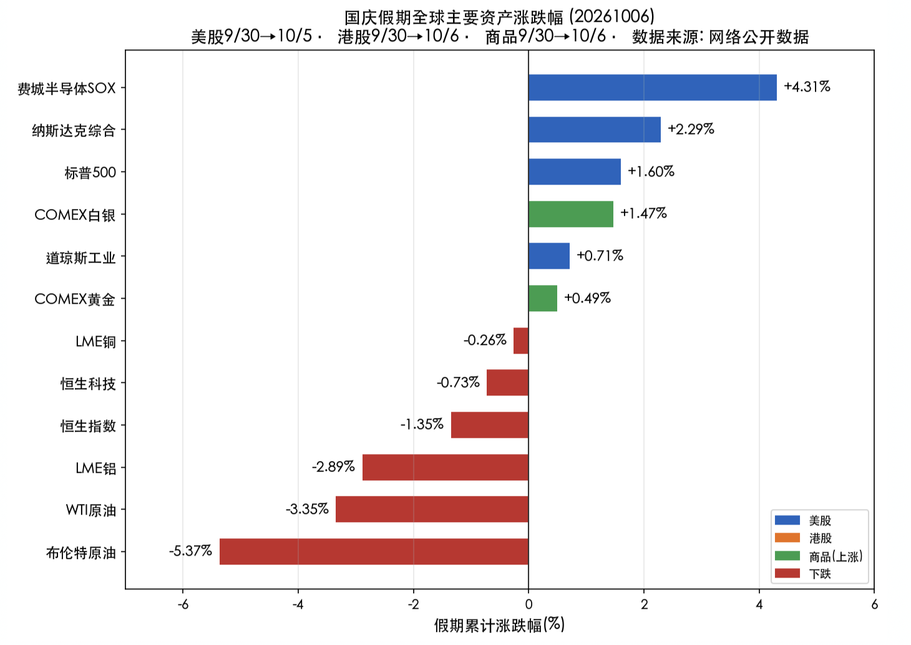
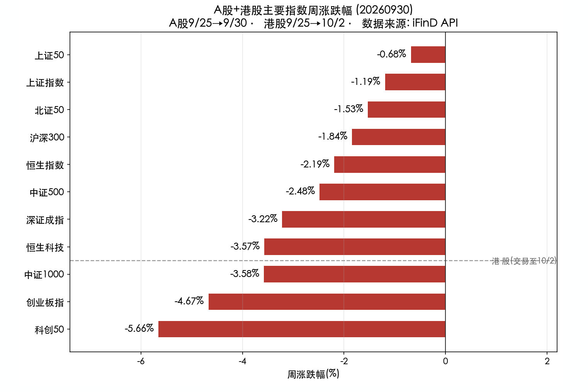
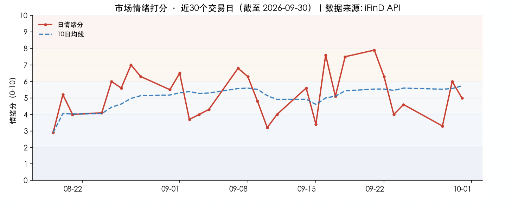

投资备忘20261007-假期市场和经济见闻
2026-09-28 — 2026-10-07 · W41 · 周度备忘
十一假期想回永城，有几件多年想做的事情想去完成、也开始想念家乡的早餐，所以确实"思念是一种很玄的东西"。到家除了跟家人吃吃喝喝，第一件是要给姥姥扫墓——过去几年没去，一直心里有石头放不下，现在安心很多。因为从小在姥姥家待的时间很长，很多道理也是她用朴素的话告诉我，小时候睡觉前总听她祷告、唱诗，睡的总是很好。
假期大家吃饭总要聊聊当下。永城好一点，毕竟有煤炭、现在化工也搞起来，旅游也算是豫东唯一的 5A 芒砀山；房价也在跌但跌幅很有限，6000+ 也不便宜，土地的供给很克制，不像很多城市卖地狂魔；小孩也在变少，但还有农村的城市化，所以体感并不强；挣钱确实变难，但永城人很难再委屈自己的嘴——无论是吵架还是吃饭。早餐店火爆的一批：肉盒、水煎包、菜馍、豆粥、sa 汤、油茶，没有预制，所以等位和抢包子很平常。
假期市场：海外与大类资产
海外风险偏好改善、港股偏弱、美债新高、原油和金属下跌。
海外风险偏好假期改善：半导体与纳指领涨、美债利率冲高回落、油价破百后跳水，美股整体走强——半导体（SOX +4.31%）> 纳指（+2.29%）> 标普（+1.60%）> 道指（+0.71%），风险偏好明显向成长/科技倾斜。
港股国庆期间仅休市 10/1：10/2、10/5 两个交易日承压，10/6 大幅反弹但未完全收复——恒指 9/30 收 24613.27 → 10/6 收 24280.56，假期累计 -1.35%；恒生科技 -0.73%。美元指数站上 102（去年 4 月以来新高，三周连涨）；美债 10Y 收益率 5.27%（10/1 曾冲至 5.34%，创 2002 年以来新高后回落）。
原油「破百后跳水」：10/1 布油一度升破 100 美元（收 101.52），随后 G7 通过 IEA 协调放储 1 亿桶、霍尔木兹海峡原油恢复通行，油价连续回落——假期累计布油 -5.37%、WTI -3.35%。
贵金属先抑后扬：10/1 黄金一度暴跌约 4% 至 4110 美元附近，随后美债利率回落带动反弹，现价约 4176 美元（假期累计 +0.49%），白银约 60.98 美元（+1.47%）。基本金属分化：LME 铜约 14401（基本持平，-0.26%），LME 铝约 3121（-2.89%），受美元走强压制。

国内内需偏弱的结构未变：消费"乏力"（票房 -44.8%、人均消费走弱）与地产"总量弱、一线强、刚需热"并存，政策（以旧换新 2500 亿、房贷贴息）是主要支撑，后续需跟踪社零与地产销售的落地转化。
非农差，为什么美债突破新高？
9 月非农远低预期（仅新增 2.9 万 vs 预期 9 万，失业率升至 4.2%）令市场对美联储 10 月加息的押注明显降温，高估值科技股压力释放——但是美债十年却一度冲高 5.3% 以上。
供需是主因：短期关注供需失衡、长期财政再融资风险开始被提及——美债发行偏多、但需求偏弱。
风险资产对贴现率暂时脱敏——当前 AI 的投资回报支撑利率的上行，代价是明年的显著衰退。
本周市场：防御占优
国庆长假前最后三个交易日，资金"持币过节"情绪主导——周一高位科技题材（光模块/半导体/存储）放量杀跌拖累指数，周二起防御板块（地产/医药/银行/红利）逆势承接，周三科创 50 补跌收尾。全周呈"科技退潮、防御占优"的高低切换格局，上证仅小跌 1.19%，但成长指数普跌 3%–6%。
"指数抗跌、个股普跌"的市值加权结构：大盘权重（银行/地产/医药/白酒）逆势护盘，而中小盘科技成长遭抛售。
科技退潮是本周主导矛盾：前期涨幅最大的 AI 算力（光模块/存储/半导体）成为节前兑现主力，通信设备 -8.69%、半导体 -6.73% 领跌全市场——主因美债利率飙升压制高估值成长 + 节前资金避险兑现。
地产链与医药是两条逆势主线：房贷贴息政策（中央财政首次贴息地产）点燃地产链，创新药出海 BD 密集（默沙东/阿斯利康大额交易）点燃医药生物，两大板块成为资金避风港。
贵金属与资源股受美债压制：COMEX 黄金 -3.56%、白银 -6.64%，A 股黄金概念 -2.75%、稀土 -5.18%，实际利率抬升是核心压制项。

市场展望
地产政策边际改善，但挤牙膏式的输出仍然让人无语——这几年政策从来就是既当又立：尽量不出钱办小事、出小钱办大事、出大钱办傻事。政策虽然实际效果可能一般，但不耽误市场炒——毕竟一线城市正在稳定，地产开发商也能喘息一下，但开发和销售的变化估计要等到明年。
美债突破 5.3% 意味着中国资产对海外的吸引力下降——无论是汇率还是利息的收益；同时 AI 产业的投资竞争，硬件显然面临产能扩张后的周期波动，这种情况下海外资金流入显然会下降。
市场情绪：情绪节前不高不低。主因量能萎缩（成交额仅为 20 日均额 0.8 倍）与节前观望。情绪处于"中性偏谨慎"区间，无恐慌性抛售（跌停仅 8 家），但也无进攻性增量资金。

模式识别：5、6 月份以来市场从高点回撤 10%、底部震荡 2 个多月，当前市场仍然更像 2021 年春节后抱团股瓦解的震荡 + 市场出现新热点的场景——如果没有新热点，则更可能像 2021 年 1-3 月震荡后的破位：前者后续是震荡，后者是破位。短期从 8 月份以来的 3850-4000 点的震荡拉回到 7 月份 3770-4000 点的震荡区间，最后两个交易日有反弹但看起来仍然是较弱的反抽，预期弱势会继续，并尝试测试 7 月低点。
组合备忘
Beta 组合微跌，表现明显跑赢市场（市场是指中证全 A -2.4%），Macro 上涨。本周市场下跌组合跑赢，主要是持仓的地产上涨、红利资产稳定的影响。组合仓位基本持平：Beta 策略仓位 80%，降低地产、增加其他红利；Macro 策略仓位 71%（其中转债 30%）。组合的超额主要是地产股反弹的影响，资源周期和其他红利同样有贡献，科技和机器人本周收跌。
| 类别 | 仓位 |
|---|---|
| Beta 策略（降地产、增红利，仓位持平） | 80% |
| Macro 策略权益仓位（含转债 30%） | 71% |
Beta 明显跑赢市场 · Macro 上涨 · 周度涨幅不再公开播报
操作和思考：本周主要是内部结构的调整，整体仓位稳定——此前仓位的下降，增加了组合韧性和灵活度。
下一步：继续保持谨慎，无论是仓位还是结构。内需的疲弱需要更多的政策、更长的时间和市场更大的压力；海外的流动性压力是当下的压力，同时国内的杠杆资金（融资下降）和新发基金下降；市场可能再次测试下方的支撑——仓位继续下调。结构上：HALO 资产和低位资产保持稳定，科技和机器人等弹性资产继续下降。
研究：AI 未来的端侧应用、HALO 资产的梳理和聚焦、特高压相关资产。
上期钩子的答案：① 3850 防守位测试的深度与节后方向——部分验证：节前未破 3850，但震荡区间已从 3850-4000 拉回到 3770-4000，弱势反抽、下一步测试 7 月低点；② 10 月加息定价对资源品的负向消化——逻辑生变：非农远低预期令加息押注降温，但美债供需失衡与财政再融资风险接棒推升利率，压制未解；③ 医药主线（超跌 + 低配回流）的持续性——验证：节前地产/医药仍是两条逆势承接主线；④ 老登小登代际分化——本期未及观察，留钩。新钩子：① 3770-4000 区间与 7 月低点的测试结果——2021 式震荡（有新热点）还是破位（无新热点）；② 美债 5.3%+ 与财政再融资风险的持续性；③ 地产"挤牙膏"政策的实际效果与开发销售变化（预计明年）；④ AI 投资回报支撑利率上行、"代价是明年的显著衰退"的判断验证。对账窗口：2026 年 10 月中旬。